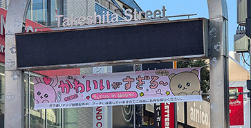

EL PESO POLÍTICO
DEL HARAJUKU
EN JAPÓN_
En Occidente, las estéticas surgidas en las calles de Tokio suelen consumirse como simples excentricidades visuales o tendencias pop. Gran error. Vestir Decora, Lolita, Gyaru o Cyberpunk en el Japón de los 90 y los 2000 fue, en su núcleo, un sabotaje ideológico.
Para comprender el peso político del Harajuku es necesario deconstruir el espacio público japonés. En un sistema social que prioriza el colectivismo, la predictibilidad y el uniforme corporativo o escolar como símbolos de orden, el cuerpo individual se convierte en el primer territorio en disputa. Salir de la estación de Harajuku los domingos cargando kilos de joyería plástica, capas infinitas de encaje o peinados fluorescentes no era un juego; era una disidencia activa contra las expectativas de productividad del Estado.

// LA RECONQUISTA DEL ESPACIO
Takeshita-dori y los alrededores del parque Yoyogi funcionaron durante décadas como zonas autónomas temporales, donde la juventud creaba sus propios micro-gobiernos estéticos.
01_ EL SÍNDROME DEL CLAVO CORRUIDO
A diferencia de los movimientos de protesta occidentales, que suelen articularse mediante pancartas, huelgas y discursos explícitos, la juventud de Harajuku eligió la saturación semiótica. El uso extremo de accesorios *Kitsch*, la hiper-feminización subversiva del *Lolita* (que rechazaba activamente la mirada masculina y el destino tradicional de la mujer japonesa) o las pieles oscurecidas del *Gyaru*, atacaban de frente los pilares del conservadurismo nipón.
"Sobrecargar el cuerpo con capas de tul, cables y plástico es una manera de volverse físicamente inamovible en una sociedad que te exige fluir sin hacer ruido." ★
Cuando el gobierno metropolitano de Tokio abolió las calles peatonales dominicales (*Hokoten*) a finales de la década de los noventa, la narrativa oficial citó la gestión de tráfico y el orden público. La realidad era obvia: se necesitaba desmantelar el epicentro de la disidencia corporal antes de que el virus de la individualidad contaminara los distritos financieros colindantes. Lo que siguió no fue la muerte del Harajuku, sino su dispersión y posterior mutación internacional, cruzando océanos hasta echar raíces en colectivos de resistencia en lugares como México.
02_ EL ESPACIO PÚBLICO COMO CAMPO DE BATALLA
Para entender la dimensión política de Harajuku, debemos viajar a la década de 1980 y principios de los 90, a la mítica zona peatonal de Hokuten (Hokosha Tengoku). Cada domingo, las calles se cerraban al tráfico y se abrían a la juventud. En una sociedad japonesa profundamente colectivista, regida por el proverbio "el clavo que sobresale recibirá un martillazo", adueñarse del espacio público para bailar y vestir de forma disruptiva era un acto de flagrante rebeldía.
El dato histórico: En 1997, el gobierno municipal abolió definitivamente el Hokuten de Harajuku, argumentando problemas de tráfico y ruido. No obstante, muchos sociólogos coinciden en que fue un intento deliberado del establishment por disolver un foco de desobediencia civil estética y despolitizar a la juventud.
Lejos de morir, la resistencia mutó. Al ser expulsados de las grandes avenidas, los jóvenes se refugiaron en los callejones estrechos conocidos como Ura-Harajuku. La moda se volvió más introspectiva, más radical. Vestirse en Harajuku se convirtió en el único voto disponible para una generación desencantada con la gerontocracia política de su país: un voto emitido a través de la identidad textil.
ANÁLISIS POR
Jellyfish Galaxy